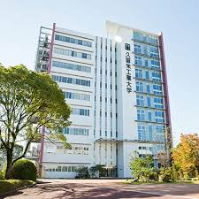

学校
趣味
おススメなアニメ
血液型

機械システム工学科は、機械工学及びＩＴ（情報技術）に関する基礎知識の修得のために、実験・実習・演習に重点を置いた、より実践的な教育を行い、モノづくりに必要な応用力のある技術者を育成することを目的とする。 交通機械工学科は、自動車や航空宇宙機の設計開発・製造及び整備技術に関して理論と実践の調和のとれた教育を行い、自動運転や人工知能などの先進的なモビリティ技術にも対応できる知識と応用力のある技術者を育成することを目的とする。 建築・設備工学科は、建築の機能性、安全性、快適性、デザイン性について総合的な教育を行い、建築、建築設備、インテリアに関する高い専門的知識を持つ技術者を育成することを目的とする。 情報ネットワーク工学科は、情報技術の基礎知識を修得し、応用力を養う実習・演習を重視した教育を行い、情報システムの構築及び多様な分野への適用に関して実践力のある技術者を育成することを目的とする。 教育創造工学科は、工学の基礎知識の上に、理科、数学の専門分野に応じて実験・演習に重点を置いた教育を行い、理科と数学の教育に関して興味や面白さが伝えられる実践力のある教員を育成することを目的とする。
久留米工業大学HPは
リンク